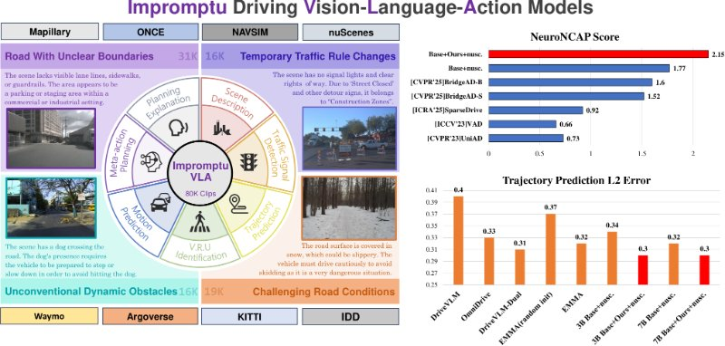
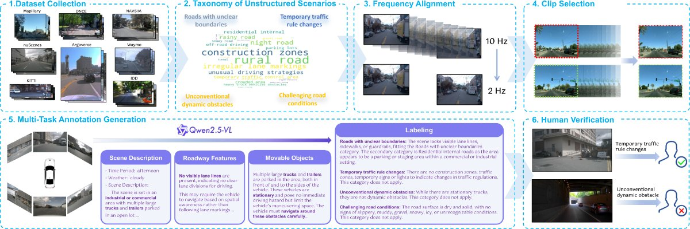

Impromptu VLA: Open Weights and Open Data for Driving Vision-Language-Action Models

Abstract
Vision-Language-Action (VLA) models for autonomous driving show promise but falter in unstructured corner case scenarios, largely due to a scarcity of targeted benchmarks. To address this, we introduce Impromptu VLA. Our core contribution is the Impromptu VLA Dataset: over 80,000 meticulously curated video clips, distilled from over 2M source clips sourced from 8 open-source large-scale datasets. This dataset is built upon our novel taxonomy of four challenging unstructured categories and features rich, planning-oriented question-answering annotations and action trajectories.
Crucially, experiments demonstrate that VLAs trained with our dataset achieve substantial performance gains on established benchmarks — improving closed-loop NeuroNCAP scores and collision rates, and reaching near state-of-the-art L2 accuracy in open-loop nuScenes trajectory prediction. Furthermore, our Q&A suite serves as an effective diagnostic, revealing clear VLM improvements in perception, prediction, and planning.
Data Processing and Annotation Pipeline

Open-loop Results on nuScenes
L2 trajectory prediction error (metres, lower is better). Training on a subset of Impromptu VLA before fine-tuning on nuScenes improves every horizon.
| Model | 1 s | 2 s | 3 s | Avg. |
|---|---|---|---|---|
| 3B Base + nuScenes | 0.14 | 0.30 | 0.58 | 0.34 |
| 3B Base + Impromptu + nuScenes | 0.13 | 0.27 | 0.52 | 0.30 |
| 7B Base + nuScenes | 0.13 | 0.28 | 0.55 | 0.32 |
| 7B Base + Impromptu + nuScenes | 0.13 | 0.27 | 0.53 | 0.30 |
BibTeX
BibTeX
@inproceedings{chi2025impromptu,
title = {Impromptu VLA: Open Weights and Open Data for Driving Vision-Language-Action Models},
author = {Chi, Haohan and Gao, Huan-ang and Liu, Ziming and Liu, Jianing and Liu, Chenyu and Li, Jinwei and Yang, Kaisen and Yu, Yangcheng and Wang, Zeda and Li, Wenyi and Wang, Leichen and Hu, Xingtao and Sun, Hao and Zhao, Hang and Zhao, Hao},
booktitle = {Advances in Neural Information Processing Systems (NeurIPS)},
year = {2025}
}Acknowledgements
Outcome of an industry–academia collaboration between Bosch Research and Tsinghua University, sponsored by Bosch Research. Figures on this page are reproduced from the paper, which is released under CC BY-NC-ND.